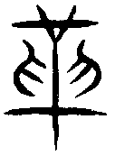

䷰ 革卦 澤火革
革，已日乃孚，元亨利貞，悔亡。初九，鞏用黃牛之革。六二，已日乃革之，征吉，无咎。九三，征凶，貞厲，革言三就，有孚。九四，悔亡，有孚，改命吉。九五，大人虎變，未占有孚。上六，君子豹變，小人革面，征凶，居貞吉。
【卦名】
今本：革 歸藏：革 帛書：勒 清華簡：悈 上博簡：革
|
彖曰：革，水火相息，二女同居，其志不相得，曰革。（圖：小配） |
改革、變革、革命、汰舊革新。
《說文》：「革，獸皮治去其毛，革更之，象古文革之形。凡革之屬皆从革。」革字原本指的是皮革，將獸皮的毛除去之後的皮，與原來的皮草有很大的改變，因此引申就是改變、變更，改革。另《說文》引革古文：「 ，古文革，从三十。三十年為一世，而道更也。」其字形構為「三十年」，三十年即一個世代，一世則世道更始，也就是變革。
李光地：「更改之義，有取於革者。革，鳥獸之皮也。鳥獸更四時則皮毛改換，《堯典》『希革』『毛毨』之類是也，六爻取象於牛虎豹者以此。牛之皮至堅韌，難以更革者也。以之繫物則固，故遯二之執用者似之。以之裹物則密，故革初之鞏用者似之。」李光地說法引用了《尚書》，認為革的取義來自於鳥獸的皮毛，因為四時更替的時候鳥獸皮毛會改換而脫落再更新，爻辭中的虎變豹變屬於此類。但牛皮特別堅韌而難以變革，但若用來綁東西又格外堅固，這也是革卦初爻的鞏之用黃牛之革的意思。
帛書卦名作勒，《說文》：「馬頭落銜也。」段玉裁：「《爾雅》：轡首謂之革。革即勒之省，馬絡頭者，轡所係也，故曰轡首。」革可視為勒之省，反之，勒亦可借為革。
清華簡作悈。《說文》：「悈，飭也。」《方言》：「悈，革，老也。」悈與戒通，為警戒的意思，但也可與革互通。
《彖傳》以兩女同居無法相處來講革卦。又引「湯武革命」，命為天命，革命即改變天命，謂天命從夏轉至商，或從商轉到周，改朝換代之義。
上為少女，下為中女，少女和中女無法相處之象。澤水往下要澆熄下面的離火，離火炎上要燒乾上面的澤水，為澤水滅離火，離火滅澤水，水火不相容的卦象，因此終將變革。若是問人際關係和感情，革是一個大凶之卦，表示人與人不但不和，而且到水火不容的地步。這也是《彖傳》說的：「革，水火相息，二女同居，其志不相得，曰革。」
同樣是少女與中女在一起的睽卦則是孤獨、分離的意思。因離火在上而炎上，澤水在下而滅下，火與澤不同路，相去更遠。意謂兩個女人井水不犯河水，道不同不相為謀。
革也有爐象，《朱子語類》：「鄭少梅解革卦以為風爐，亦解得好。初爻為爐底，二爻為爐眼，三、四、五爻是爐腰處，上爻是爐口。」那麼革鼎兩卦就合為鼎爐。
卦序上，革卦是繼井而來。井卦改邑不改井，但物極必反，所以繼之以革。就如恒卦之後，穩定久了就要遯（逃）、大壯（大撞）一樣。
《雜卦傳》：「革去故也，鼎取新也。」革與鼎為一體之兩面，革是去除舊政權，就是改變天命。鼎則是建立新政權，繼承天命。
得革卦代表該是變革的時候，所以革卦的吉應在於改變、變革，若守舊不變則凶。如果是自我反省，自我改變，那麼就是改革、革新；但若是留著讓別人來幫你改變、革新，那麼就變成革命。
革，已日乃孚，元亨，利貞，悔亡。
- 《彖》曰：革，水火相息，二女同居，其志不相得，曰革。已日乃孚，革而信之，文明以說，大亨以正，革而當，其悔乃亡。天地革而四時成，湯武革命，順乎天而應乎人，革之時大矣哉。
- 《象》曰：澤中有火，革，君子以治歷明時。
- 《序卦》：井道不可不革，故受之以革。革物者莫若鼎，故受之以鼎。
- 《雜卦》：革，去故也。鼎，取新也。
變革，天命來臨之日，才能取信於民。大亨通，利於貞定，不再後悔。
「已日」指「天命已改之日」。周武王九年盟津之會時諸侯皆曰：「紂可伐矣。」武王說：「女未知天命，未可也。」這就是天命未到時。再兩年之後的牧野之誓，風雨大作，群臣皆懼，反而周武王執意伐紂，這才是「已日」，就是天命已到時，也就是可以發動革命的時候。
六二已日乃革之，可將六二視為主爻。就六爻來講，已日對應到的就是六二。
鄭玄：革，改也。水火相息而更用事，猶王者受命，改正朔，易服色，故謂之革也。
孔穎達：革者，改變之名也。此卦明改制革命，故名革也。
【字義】
已日：有多種解釋。一、天命已改之日，意指天命來臨時才是革命之最佳時機，因為只有天命才能夠讓人信服。二、變革已到或已經完成之日。已為已經的已。三、作「己日」，十天干「戊己庚辛」的己。京房納甲以離納己，革下卦為離，納己，故下離主爻六二也曰己日，己日代表吉日。四、當作「巳日」，巳通祀，巳日即祭祀之日。損初九「已事遄往」或作「祀事遄往」。虞翻：「祀，舊作巳也。」
治歷明時：歷，通曆。治曆明時，治理曆法，讓人民明白時節。改正朔、建曆法，明白告知百姓已經改朝換代之日。曆法變革之後才算變革完成。上兌為蛻變，下離為日，上兌下離即治曆明時之象。
初九，鞏用黃牛之革。
《象》曰：鞏用黃牛，不可以有為也。
用黃牛皮革繩將它緊緊繫綁牢固，比喻心志堅定而不為所動。
時機未到，尚無法有所改變。此時可以守成而無法革命。地位與權力還不夠，無法有所做為，所以仍應以鞏固原本的志向與基礎為吉，不能妄動。《象》曰：「鞏用黃牛，不可以有為也。」意指不能有所做為。干寶認為，這是講文王還在伺機而動之時，雖然當時天下民心歸周，他仍然按兵不動，事奉殷商。
「鞏用黃牛之革」與遯卦「執之用黃牛之革」義同。遯六二：「執之用黃牛之革，莫之勝說。」《象傳》：「執用黃牛，固志也。」因此此段爻辭或與遯六二同樣指將小豬綁好，以免小豬逃跑。遯《象傳》以「固志」，鞏固心志來說明。
【字義】
鞏：音拱，以皮革綑綁東西成束，引申為堅固，也是現今常說的「鞏固」。《說文》：「鞏，以韋束也。《易》曰：鞏用黃牛之革。」韋為獸皮，以韋束即用獸皮束縛、捆綁。馬融：「鞏，固也。」用的是引申義。王弼：「鞏，固也。黃，中也。牛之革，堅仞不可變也。固之所用，常中堅仞，不肯變也。」
黃牛之革：黃牛的牛皮。黃，中色，比喻中庸。牛，比喻柔順。革，牛皮作的革繩。用黃牛皮革的繩子鞏固，則捆綁很緊。
六二，已日乃革之，征吉，无咎。
《象》曰：已日革之，行有嘉也。
天命已來時才革命，出征吉，沒有罪咎。
天命已降，變革的時機已到，可以取信於人。此時革命順天應民，吉而後不會有罪咎。
六二與九五相應，九五為天，順天命之象。《象》曰：「已日革之，行有嘉也。」此時革命，行動將有嘉賞。
「已日」說明詳見卦辭「已日乃孚」解釋。
王弼《周易略例》：「吉无咎者，本亦有咎，由吉故得免也。」「吉，无咎」是得吉之後才能免於罪咎。
九三，征凶，貞厲。革言三就，有孚。
《象》曰：革言三就，又何之矣。
出征為凶，貞定則危險。革命之言必須再三審議，並取得信任。
三為多凶之位，不論出征或貞定不動，都有其困難。但革命已是時勢所然，但若過於急躁，直接出征則凶。必需再三審議各方意見。
出征之所以凶，過於急躁妄動。堅守之所以危險，處革之時，應當變革，不應當固守、守舊。
【字義】
革言三就有孚：有三種解釋。一、革命的言論三次討論可成，才相信可以革命。就，成，合。程頤：「革言，猶當革之論。就，成也，合也。審察當革之言，至於三而皆合，則可信也，言重慎之至。」 二、以「革言三就，有孚」解釋「征凶」的原因，三指的是上卦三個爻，言這三個爻已經遵從命令變革了，說的話也都誠實可信，還去征討，當然就是凶。王弼：「自四至上，從命而變，不敢有違，故曰革言三就。其言實誠，故曰有孚。革言三就，有孚而猶征之，凶其宜也。」 三、言革命之後循序建立新政權的三個步驟。崔憬：「武王克紂，不即行周命，乃反商政，一就也。釋箕子囚，封比干墓，式商容閭，二就也。散鹿臺之財，發鉅橋之粟，大賚于四海，三就也。故曰革言三就。」
九四，悔亡，有孚，改命吉。
《象》曰：改命之吉，信志也。
悔恨消失，已確信，改天命吉。
有孚，有信、可信的意思。改命，改變天命，或改變命令。
虞翻：將革而謀謂之言，革而行之謂之命。
《朱子語類》問：「革下三爻，有謹重難改之意，上三爻則革而善，蓋事有新故，下三爻則故事也。未變之時，必當謹審於其先，上三爻則變而為新事矣。」曰：「然，乾卦到九四爻，謂乾道乃革，也是到這處方變。」
九五，大人虎變，未占有孚。
《象》曰：大人虎變，其文炳也。
大人的變革像老虎紋一樣的文理煥發，不需占卜就有信驗。
革命之後，有為改制之時，如周公制禮作樂，此時正當大舉建立制度，讓一切步入正軌。此事不待占卜，即有應驗，大吉。
虎變比喻大人的變革，有如老虎般威猛而讓人敬畏，而所建立起的文章制度更有如虎皮一樣的條理分明而文采煥發，所以象傳以「其文炳也」來形容。
【字義】
大人：此言「大人虎變」，上六言「君子豹變」，則君子之政治位階低於大人。大人乃有官職者之稱，君子則是貴族的泛稱。
虎變：變，更也，即變革之義。虎變，言大人之變革，像虎一樣。《象傳》「其文炳也」意指「虎變」取的是其虎紋的彪炳。《周禮》「繼子男執皮帛」，賈公彥疏：「知『諸侯孤飾贄以豹皮，天子之孤飾以虎皮』者，《郊特牲》云：『虎豹之皮，示服猛也。』二者皮中為美，虎皮又貴，天子孤尊，故知義然也。」與諸侯的見面禮要用豹皮為飾，與天子的見面禮則要以虎皮為飾，因虎豹之皮不只是皮中之美者，同時也有威猛之義。《周禮》:「王大射，則共虎侯、熊侯、豹侯，設其鵠。諸侯則共熊侯、豹侯，卿大夫則共麋侯，皆設其鵠。」鄭玄:「王之大射：虎侯，王所自射也；熊侯，諸侯所射；豹侯，卿大夫以下所射。諸侯之大射：熊侯，諸侯所自射；豹侯，群臣所射。」侯即射箭的靶，以虎皮製作者為虎侯，在王大射禮上由王所自射。豹皮作的靶為豹侯，王大射禮上卿大夫以下人等射豹侯，諸侯的大射禮上則是由群臣所射。則虎紋與豹紋的象徵，分別為王公與臣僚。
占：解讀卜筮所呈現的吉凶兆象，《說文》所說的「視兆問也」。孚，信。未占有孚，不待占卜就有信驗。孔穎達：「湯武革命，順天應人，不勞占決，信德自著。」占引申又可作「覘」，視也。《左傳》成公十七年：「公使覘之，信。」未占有孚意謂人民未看到大人就已信服，此形容大人的威猛與威嚴。虞翻：「占，視也。離為占。」馬融：「大人虎變，虎變威德折衝萬里，望風而信。以喻舜舞干羽，而有苗自服；周公修文德，越裳獻雉，故曰未占有孚矣。」
上六，君子豹變，小人革面。征凶，居貞吉。
《象》曰：君子豹變，其文蔚也；小人革面，順以從君也。
君子變革有如豹一樣的敏捷而文章茂盛，小人則開始洗心革面。出征為凶，安居貞定則吉。
一切改革都已完成，步入尾聲。君子豹變為繼大人虎變之後，虎變則條理分明，豹變則遍地開花。而一般的老百姓則開始洗心革面，順服於新的統治者。此時不宜再征伐，出征則凶，守成居正則吉。此爻言君子和小人跟隨君王改變的敏捷迅速。
【字義】
君子豹變：君子的變革有如豹一樣。豹身形較虎略小，雖然威猛不如虎，但動作更為敏捷迅速。而豹紋斑點則是繁多而茂盛，所以《象傳》以「其文蔚也」形容。
小人革面：百姓改變面目、臉色。小人指百姓、民眾。
其文蔚也：蔚，原指一種蒿草，生長相當茂盛，引申為茂盛的樣子。孔穎達：「明其不能大變，故文細而相映，蔚也。」蔚《說文》引作斐：「分別文也，从文非聲。《易》曰：君子豹變，其文斐也。」
【彖傳】
彖曰：革，水火相息，二女同居，其志不相得，曰革。已日乃孚，革而信之。文明以說，大亨以正，革而當，其悔乃亡。天地革而四時成，湯武革命，順乎天而應乎人，革之時大矣哉。
水火相息：息有三種解釋。馬融：｢息，滅也。｣虞翻：｢息，長也。｣王弼兼容生長與消滅兩相矛盾的字義解釋為生變：｢息者，生變之謂也，火欲上而澤欲下，水火相戰，而後生變者也。｣革卦下卦為離火，離火炎上。上卦為兌澤，澤水毀下，為水火不容之象，即王弼所說的水火相戰。
二女同居，其志不相得：下離為中女，上兌為少女。二女同居而水火不容，故曰｢其志不相得｣。與革卦同樣由中女和少女所組成的睽卦 ，《彖傳》說：｢二女同居，其志不同行。｣似乎中女和少女註定是不能好好相處的兩卦，睽卦為各有想法，志不同行，但也互不侵犯。但革卦兩女正面交戰，水火不容。
已日乃孚，革而信之：解釋經文已日乃孚。革為變革之義，變革已成之日，或天命已改之日乃可孚信。已或作巳，通祀，損初九「已事遄往」李鼎祚《周易集解》作「祀事遄往」，祀事即祭祀之事。已或作己，六二為離主爻，下離納己。然而《周易》之中是否始用納甲，大有疑問。蠱卦有「先甲三日後甲三日」，巽九五有「先庚三日後庚三日」，但這兩處都難以用納甲來解釋。
文明以說，大亨以正，革而當，其悔乃亡：解釋經文「元亨利貞，悔亡」。二體卦德為文明以說之象。大亨以正解釋元亨利貞，大亨以正為適當之變革，革而得當才得悔亡。
天地革而四時成：天地因為有變革所以有四時的變化。
湯武革命，順乎天而應乎人：言商湯和周武的革命，乃順應天命，呼應民心。革卦成卦主爻為六二，六二承順於九三，為應乎人，因三為人位。六二遠應九五，為順乎天，因五為天位。革卦是乾坤旁通而來，先是乾上之坤三，成夬 與謙 。接著夬二之謙五，成革 與蹇 。革之六二由謙之六五而來。
“群臣皆巨”是否為“群臣皆懼”？
“群臣皆巨”是否為“群臣皆懼”？